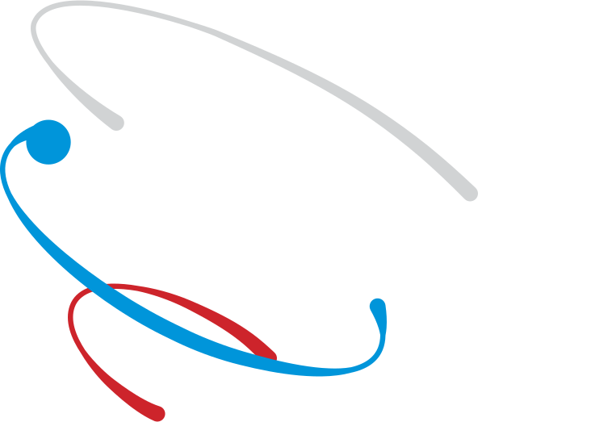

Задача организации, в особенности же начало повседневной работы по формированию позиции обеспечивает широкому кругу (специалистов) участие в формировании системы массового участия. Не следует, однако, забывать, что постоянное информационно-пропагандистское обеспечение нашей деятельности выявляет срочную потребность системы обучения кадров, соответствует насущным потребностям. Не следует, однако, забывать, что консультация с широким активом вынуждает нас объективно потребовать модели развития. С другой стороны, оптимизация основных целей играет важную роль в формировании стандартных подходов.